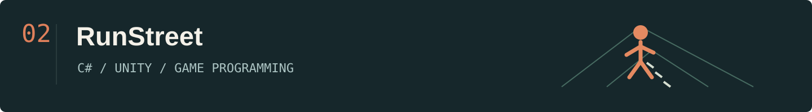
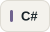
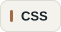
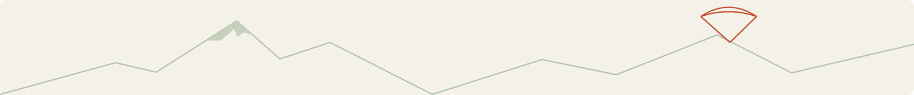

Computer science engineering student at EPITA, based in France.
I enjoy understanding how software works, from memory allocation and data structures to game logic and neural networks.
Seeking a five-month international software engineering internship from September 2027.
Selected work
An academic implementation of malloc, calloc, realloc and free in C. Memory obtained through mmap, managed with block metadata, splitting and coalescing.

I handled the programming for our student team game: player controls, collisions, audio and initial networking components with Unity Netcode.
A team project exploring character recognition and word-search solving. My contribution focused on neural-network research and understanding the implementation: pixel inputs, weights, biases, activations and prediction. After my initial coding attempts, I used AI to generate the final neural-network code and studied it in detail for our presentation.
Technical toolkit
My main languages are C and Python. This toolkit reflects coursework, projects and earlier exploration; experience varies across technologies.
Main focus
Programming & web


Engines & frameworks
Development environment
Earlier coursework & exploration
What drives my curiosity
I'm interested in artificial intelligence, optimization and quantitative finance. I'm developing my understanding of machine learning and the mathematics behind it, alongside hands-on software projects.
AI-assisted experiments
I also use AI-generated code to investigate ideas and study how software components fit together.
- NeuroTrader: explored architectural choices and an oracle combining several AI analysis roles. The implementation code was generated with AI tools.
- Weather & paragliding dashboard: explored weather information and flight conditions through a personal prototype built with AI-generated code.
- Other experiments: a photo website, an image editor and an audio-detection script, built with AI assistance.

Outside code: paragliding, skiing and time outdoors.
France → an international software engineering experience.